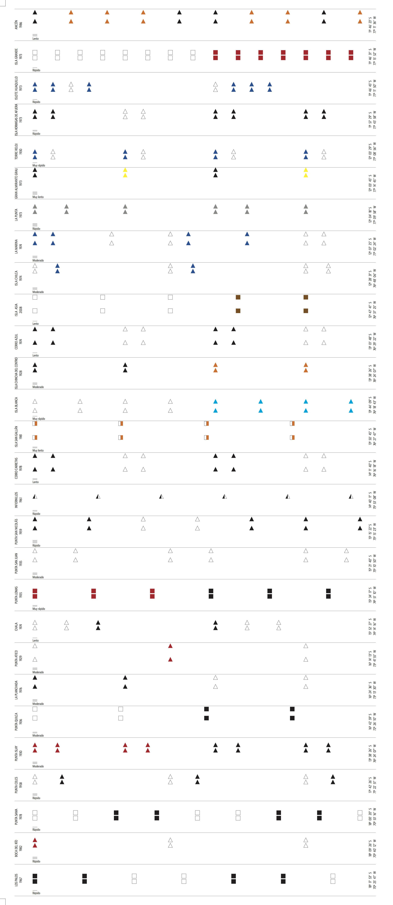

<div id="p5" class="page header">
  <div class="perspected">
    <div class="overlayer triggerFunction showing" rel="#p5"></div>
    <h1 class="title-normal" rel="#p5">
      
      <div class="title center">
        <span class="number">4</span>
        <p class="black" data-translatable><span>SCORE</span><span>PARTITURA</span></p>
      </div>
    </h1>
    <span class="closer">
      
    </span>
    <div class="no-visible">
      <div class="box-shadow">
        <div class="pl-15 pr-15 present-paddings">
          <div class="center score-area">
            <p class="text-3 part-text" data-translatable>
                <span><i>All the Lighthouses of the Peruvian Coast</i> is a modular graphic score composed of 56 sections. The notations of each module originate from the lighting and structural characteristics of the 56 lighthouses on the coast. The individual codes of the lighthouses result in variations that, in succession, evoke the physical-geographical peculiarities that exist along this strip. Representing a coastline punctuated with a string of lighthouses, the score is a concatenation of graphics, markings and instructions that return us to those lighthouses as a source.</span>
                <span><i>Todos los faros de la costa peruana</i> es una partitura gráfica modular compuesta por 56 secciones. Las notaciones de cada módulo tienen como origen las características lumínicas y estructurales de los 56 faros dispuestos en el litoral. Los códigos individuales de los faros resultan en variaciones que, en sucesión, evocan las peculiaridades físico-geográficas existentes a lo largo de dicha franja. Si la costa es una línea plagada de faros, esta partitura es una concatenación de gráficos, marcas e instrucciones que nos devuelve a esos faros como fuente.</span>
            </p>
            <p class="text-decoration" data-translatable><span>Instructions</span><span>Instrucciones</p>
            <ul class="score-instructions">
              <li class="text-3" data-translatable><span>1. For any object, instrument or voice.</span><span>
                  1. Para cualquier objeto, instrumento o voz.</span>
              </li>
              <li class="text-3" data-translatable><span>2. Before starting the piece, the players are free to
                  choose a
                  combination of any two simultaneous sounds to which they can return to at any point in the piece, if
                  they so desire.</span><span>
                  2. Antes de empezar la pieza, el intérprete tiene la opción de elegir una combinación de dos sonidos simultáneos a la que podrá volver en cualquier punto de la pieza si es que lo desea.</span>
              </li>
              <li class="text-3" data-translatable><span>3. The interpretation of this score can begin with any of
                  the
                  modules, discarding one or more, or repeating some others at will. It can also be interpreted with
                  several or all of them simultaneously.</span><span>
                  3. La interpretación de esta partitura puede comenzar por cualquiera de los módulos, descartar uno o varios, o repetir algún otro a voluntad. También puede interpretarse varios módulos o todos ellos de manera simultánea.</span>
              </li>
              <li class="text-3" data-translatable><span>4. In each module, the aural ideas are expressed and then
                  followed
                  by periods of silence:</span><span>
                  4. En cada módulo se despliegan ideas sonoras seguidas por silencios:</span>
              </li>
            </ul>
            
            <div class="legend">
              <div class="legend--item">
                <div class="info">
                  
                </div>
                
                <div class="info" data-translatable><span>Short aural ideas</span>
                  <span>Idea sonora corta</span>
                </div>
              </div>
              <div class="legend--item">
                <div class="info">
                  
                </div>
                
                <div class="info" data-translatable><span>Medium aural ideas</span>
                  <span>Idea sonora media</span>
                </div>
              </div>
              <div class="legend--item">
                <div class="info">
                  
                </div>
                
                <div class="info" data-translatable><span>Long aural ideas</span>
                  <span>Idea sonoralarga</span>
                </div>
              </div>
            </div>
            <ul class="score-instructions">
              <li class="text-3" data-translatable><span>Aural ideas can be the clean sounds of an instrument
                  or
                  voice, or some other configuration of sounds. The name “aural ideas” rather than the word “sounds” has
                  been used to underline that these are configurations —mixes, noises— and not just musical
                  notes.</span><span>
                  Ideas sonoras pueden ser sonidos limpios de un instrumento o voz, o también alguna configuración de
                  sonidos. Se ha empleado el nombre “ideas sonoras”, y no la palabra “sonidos”, para subrayar que se trata
                  de configuraciones —mezclas, ruidos— y no solamente de notas musicales.</span>
              </li>
              <li class="text-3" data-translatable><span>Silences are indicated by the blank space immediately
                  following
                  the aural ideas.</span><span>
                  Los silencios están indicados por el espacio en blanco inmediatamente consecutivo a las ideas
                  sonoras.</span>
              </li>
              <li class="text-3" data-translatable><span>5. The colors mark changes in the character of the
                  performance and
                  / or freely chosen techniques.</span><span>
                  5. Los colores marcan cambios de carácter de la interpretación y/o de técnica a libre elección.</span>
              </li>
              <li class="text-3" data-translatable><span>6. The position of aural ideas defines their pitch. If they are located at the top of the module, they are expected to be higher. The reverse happens if they are located at the bottom where they should be lower. Each module generally incorporates the notation for duplicated aural ideas at two levels. During the performance these can be alternated and combined. The player can also choose to use one or the other interchangeably.</span>
                  <span>
                  6. La posición de las ideas sonoras define su altura tonal. Si se ubican en la parte superior del módulo, se espera que sean más agudas. Sucede lo inverso si se ubican en la parte inferior, cuando deben ser más graves. Por lo general cada módulo incorpora la notación de las ideas sonoras duplicadas en dos niveles. Durante la interpretación estas pueden alternarse y combinarse; también puede elegirse emplear una u otra indistintamente.</span>
              </li>
              <li class="text-3" data-translatable><span>7. Volume is indicated by short lines located at the
                  beginning of
                  each module:</span><span>
                  7. El volumen está indicado por líneas cortas ubicadas al inicio de cada módulo:</span>
              </li>
            </ul>
            
            <div class="legend">
              <div class="legend--item">
                <div class="info" data-translatable><span>Loud</span>
                  <span>Fuerte</span>
                </div>
                
                <div class="info">
                  
                </div>
              </div>
              <div class="legend--item">
                <div class="info" data-translatable><span>Regular</span>
                  <span>Regular</span>
                </div>
                
                <div class="info">
                  
                </div>
              </div>
              <div class="legend--item">
                <div class="info" data-translatable><span>Soft</span>
                  <span>Suave</span>
                </div>
                
                <div class="info">
                  
                </div>
              </div>
              <div class="legend--item">
                <div class="info" data-translatable><span>Very soft</span>
                  <span>Muy suave</span>
                </div>
                
                <div class="info">
                  
                </div>
              </div>
            </div>
            <ul class="score-instructions">
              <li class="text-3" data-translatable><span>It is optional whether to maintain the volume
                  indicated at
                  the beginning of each module or to reduce it gradually as the end approaches.</span><span>
                  Es opcional sostener el volumen indicado al inicio de cada módulo o reducirlo paulatinamente conforme se
                  acerca el final.</span>
              </li>
              <li class="text-3" data-translatable><span>8. The tempo is marked at the beginning of each module.
                  There are
                  five speeds: very slow, slow, moderate, fast, very fast.</span><span>
                  8. El tempo está señalado al inicio de cada módulo. Existen cinco velocidades: muy lento, lento,
                  moderado, rápido, muy rápido.</span>
              </li>
              <li class="text-3" data-translatable><span>9. The total duration of the piece is unlimited.
                </span><span>
                  9. La duración total de la pieza es libre. </span>
              </li>
            </ul>
            
            <a class="c-gray" href="./static/assets/img/partitura.jpg" download data-translatable><span>Download the score</span><span>Descarga la partitura</span></a>
            
          </div>
        </div>
        
        <div class="center">
          <p class="text-1" data-translatable><span>All the lighthouses of the peruvian coast is part of the Irradia
              project,
              a joint initiative of MALI and the Fundación Telefónica Movistar to
              promote the use of digital means of production as
              encouragement for artistic creation.</span><span>
              Todos los faros de la costa peruana forma parte del proyecto Irradia,
              una iniciativa conjunta del MALI y la Fundación Telefónica Movistar
              para promover la utilización de los medios de producción digital como
              estímulo para la creación artística.</span>
          </p>
        </div>
      </div>
      <div class="box-shadow nav-list-box-border pt-30">
  <div class="center">
    <p class="m-0 text-2 list-nav-title-text" data-translatable>
      <span
        >ALL THE<br />
        LIGHTHOUSES OF THE<br />
        PERUVIAN COAST</span
      ><span
        >TODOS LOS<br />
        FAROS DE LA COSTA<br />
        PERUANA</span
      >
    </p>
    <p class="m-0 text-2">Luz María Bedoya</p>
    <ul class="list-nav">
      <li>
        <a class="linktopage" rel="#p2">
          <span class="number">1</span>
          <p data-translatable>
            <span>PRESENTATION</span><span>PRESENTACIÓN</span>
          </p>
        </a>
      </li>
      <li>
        <a class="linktopage" rel="#p6">
          <span class="number">2</span>
          <p data-translatable>
            <span>SOUND PIECES</span><span>PIEZAS SONORAS</span>
          </p>
        </a>
      </li>
      <li>
        <a class="linktopage" rel="#p7">
          <span class="number">3</span>
          <p>PODCASTS</p>
        </a>
      </li>
      <li>
        <a class="linktopage" rel="#p5">
          <span class="number">4</span>
          <p data-translatable><span>SCORE</span><span>PARTITURA</span></p>
        </a>
      </li>
      <li>
        <a class="linktopage" rel="#p3">
          <span class="number">5</span>
          <p data-translatable>
            <span>LIST OF LIGHTHOUSES</span><span>LISTA DE FAROS</span>
          </p>
        </a>
      </li>
      <li>
        <a class="linktopage" rel="#p4">
          <span class="number">6</span>
          <p data-translatable><span>PROCESS</span><span>PROCESO</span></p>
        </a>
      </li>

      <li>
        <a class="linktopage" rel="#p8">
          <span class="number">7</span>
          <p data-translatable><span>CREDITS</span><span>CRÉDITOS</span></p>
        </a>
      </li>
      <!-- <li>
        <a class="linktopage" rel="#p9">
          <span class="number">8</span>
          <p data-translatable><span>ACKNOWLEDGMENTS</span><span>AGRADECIMIENTOS</span></p>
        </a>
      </li> -->
    </ul>
  </div>
</div>

      
      <div class="section-send">
  <p data-translatable>
    <span
      >To receive alerts every time new content of the project is published,
      enter your email here:</span
    >
    <span
      >Para recibir alertas cada vez que se publique nuevo contenido del
      proyecto, ingresa tu correo aquí:</span
    >
  </p>
  <div class="section-send-input">
    <input placeholder="Email" class="record-mail" type="text" />
    <a class="launch">ENVIAR</a>
  </div>
</div>

    </div>
  </div>
</div>